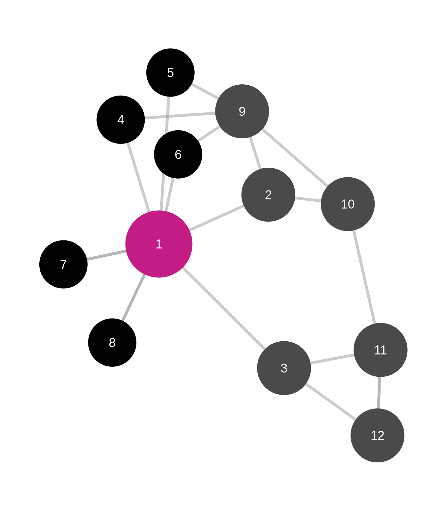
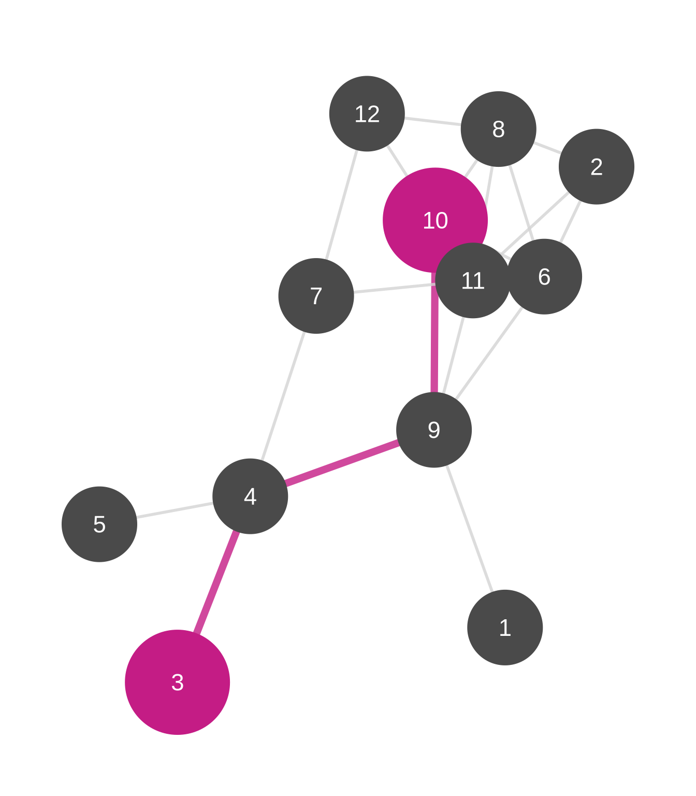
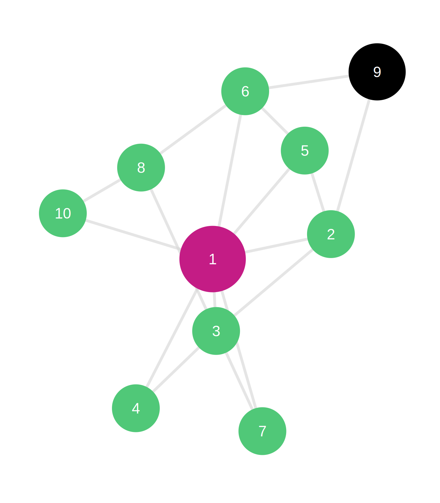
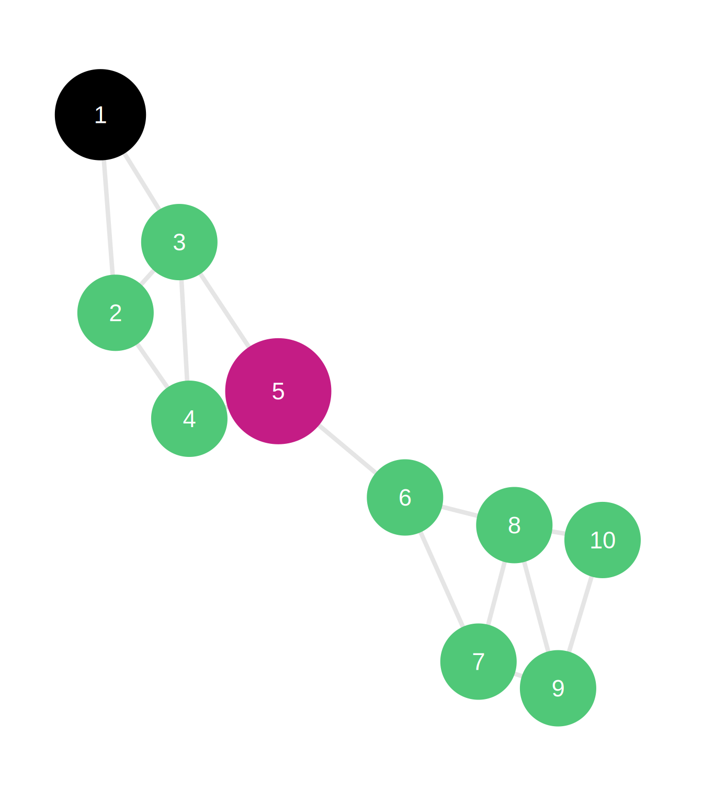
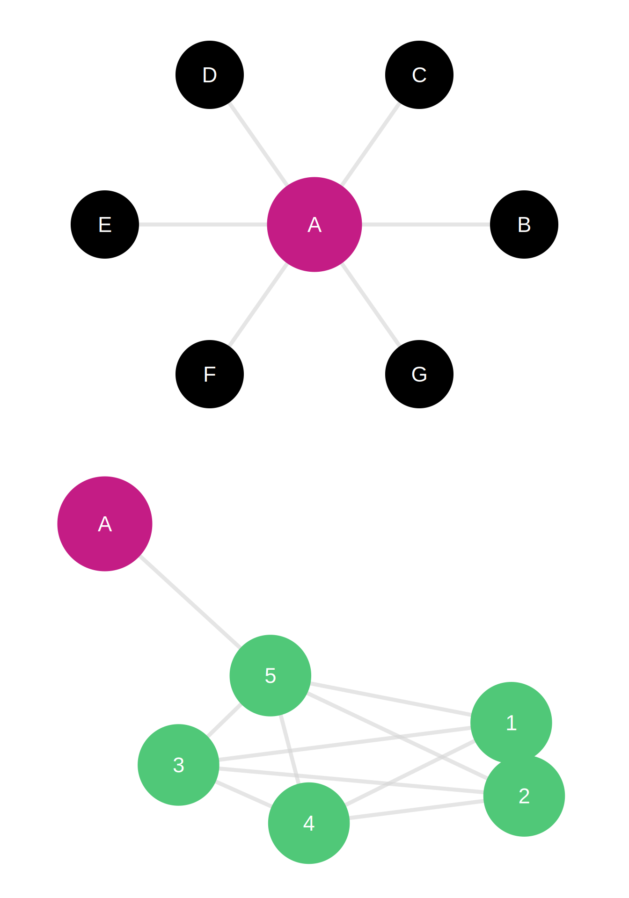
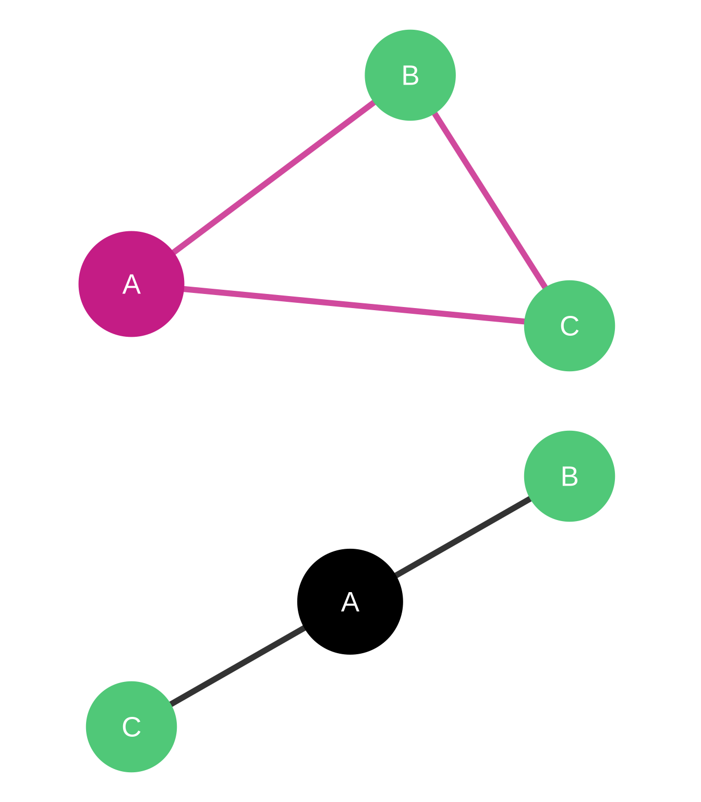
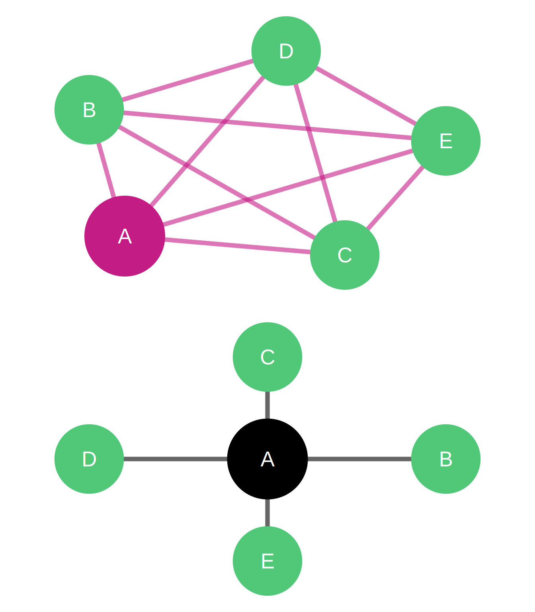

Network Centrality
Measuring Importance and Influence in Networks
What is Centrality?
The Fundamental Question:
Which node is most important in this network?
Two Core Perspectives:
- Advantageous Position: Who has structural advantages?
- Access to resources
- Control over information
- Influence over others
- Network Functioning: Who is critical for network operations?
- Facilitating flows
- Connecting groups
- Maintaining coherence
The Centrality Family
| Measure | Focus | Question |
|---|---|---|
| Degree | Direct connections | Who knows the most people? |
| Closeness | Reachability | Who can reach everyone quickly? |
| Betweenness | Brokerage | Who controls information flow? |
| Eigenvector | Connection quality | Who is connected to important others? |
| Clustering | Local cohesion | How interconnected is the neighborhood? |
| PageRank | Prestige | Who receives quality endorsements? |
Degree Centrality
Definition: Number of direct connections
\[C_D(i) = k_i\]
where \(k_i\) is the number of edges incident to node \(i\)
In Directed Networks:
- In-degree (\(k_i^{in}\)): Incoming connections
- Out-degree (\(k_i^{out}\)): Outgoing connections
Normalized Degree:
\[C_D^{norm}(i) = \frac{k_i}{n-1}\]
where \(n\) is network size
Degree Centrality: Interpretation
Undirected Networks:
- Many friends, contacts, or connections
- High visibility and local influence
- Direct access to information and resources
- Potential for rapid mobilization
Directed Networks:
- High in-degree: Popular, prestigious, sought after
- Example: Highly cited papers, celebrity Twitter accounts
- High out-degree: Active, gregarious, outgoing
- Example: Frequent emailers, prolific citers
Degree Centrality: Business Example
R&D Lab Technical Advice Network
High Degree Scientist (sought by 18 colleagues for advice)
- Recognized expert with broad technical knowledge
- Central information hub in the laboratory
- High visibility and influence on research directions
- Risk: Bottleneck for problem-solving, time constraints
Low Degree Scientist (consults with 3 colleagues)
- Focused expertise in specialized area
- May have deep knowledge in niche domain
- Less demand on time for advice-giving
- Opportunity: Develop broader skillset, increase collaboration
Real Pattern: Power-law distribution—few scientists provide most technical advice
Closeness Centrality
Definition: Inverse of average distance to all other nodes
\[C_C(i) = \frac{n-1}{\sum_{j \neq i} d(i,j)}\]
where \(d(i,j)\) is the shortest path distance from \(i\) to \(j\)
Alternative (Harmonic Mean):
\[C_C^{harm}(i) = \sum_{j \neq i} \frac{1}{d(i,j)}\]
Intuition: How quickly can node \(i\) reach everyone else?

Closeness Centrality: Interpretation
What High Closeness Means:
- Can quickly access information from anywhere in network
- Efficient communication with all other nodes
- Potential for rapid dissemination
- Strategic position for time-sensitive activities
Applications:
- Supply chains: Central warehouses minimize delivery times
- Organizations: Managers with high closeness coordinate efficiently
- Epidemic control: High closeness nodes are early infection points
- Innovation: Quick access to diverse information sources
Closeness Example: Knowledge Networks
Engineering Consulting Firm
High Closeness Engineer (avg distance = 2.1)
- Can quickly reach any expertise in the firm
- Efficient problem-solving through quick consultation
- Ideal for project coordination roles
- Fast knowledge integration
Low Closeness Engineer (avg distance = 4.8)
- Isolated in organizational periphery
- Slower access to firm-wide expertise
- May develop specialized deep knowledge
- Potential: Mentorship to improve integration
Strategic Implication: Closeness predicts coordination effectiveness

Betweenness Centrality
Definition: Proportion of shortest paths passing through a node
\[C_B(i) = \sum_{j<k} \frac{g_{jk}(i)}{g_{jk}}\]
where:
- \(g_{jk}\) = number of shortest paths between \(j\) and \(k\)
- \(g_{jk}(i)\) = number of those paths passing through \(i\)
Normalized:
\[C_B^{norm}(i) = \frac{2 \cdot C_B(i)}{(n-1)(n-2)}\]
Betweenness: The Broker Position
What High Betweenness Means:
- Controls information flow between others
- Broker between different groups or communities
- Can delay, distort, or facilitate communication
- Structural hole position (Burt’s theory)
Strategic Value:
- Information arbitrage: Access to diverse information
- Gatekeeping power: Control what information passes
- Innovation potential: Recombination of ideas from different groups
- Political capital: Both sides need the broker
Betweenness Example: Innovation Networks
Pharmaceutical R&D Network
High Betweenness Scientist (bridges Chemistry & Biology labs)
- Unique position connecting two specialized domains
- Controls knowledge transfer between groups
- First to see combination opportunities
- Career advantage: Valuable to both groups
- Organizational value: Enables cross-disciplinary projects
Low Betweenness Scientist (within dense cluster)
- Embedded in single community
- Many redundant paths don’t pass through them
- Deep specialization possible
- Innovation: Incremental improvements
Finding: High betweenness predicts cross-disciplinary breakthroughs

Eigenvector Centrality
Definition: Centrality proportional to sum of neighbors’ centralities
\[x_i = \kappa^{-1} \sum_{j} A_{ij} x_j\]
In matrix form: \(\mathbf{Ax} = \kappa \mathbf{x}\)
where \(\mathbf{x}\) is the leading eigenvector of adjacency matrix \(\mathbf{A}\)
Key Insight: You’re important if you’re connected to important people
Recursive Logic: Node centrality depends on neighbors’ centrality, which depends on their neighbors’ centrality, etc.
Eigenvector Centrality: Quality vs. Quantity
Degree vs. Eigenvector:
- Degree: Counts all connections equally (1 point per neighbor)
- Eigenvector: Weights neighbors by their importance
Example Scenarios:
Scenario A: High Degree, Low Eigenvector
- 50 connections to peripheral nodes
- “Popular among the unpopular”
- Volume without prestige
Scenario B: Low Degree, High Eigenvector
- 3 connections to highly central nodes
- “Connected to the elite”
- Quality over quantity

Eigenvector Example: Venture Capital
Startup Funding Network
High Eigenvector VC Firm
- Invests alongside other prestigious VCs
- Connected to successful entrepreneurs
- Signals quality to market
- Attracts top deal flow
- Co-investment opportunities with elite partners
Low Eigenvector VC Firm
- Invests with less established partners
- May take more risks on unproven teams
- Less signaling value
- Opportunity: First-mover on emerging trends
Empirical Finding: High eigenvector centrality VCs achieve higher returns (network effects in syndication)
Clustering Coefficient
Definition: Proportion of neighbors that are also connected
\[C_{clust}(i) = \frac{2e_i}{k_i(k_i-1)}\]
where:
- \(k_i\) = degree of node \(i\)
- \(e_i\) = number of edges between neighbors of \(i\)
Interpretation: How interconnected is node \(i\)’s neighborhood?
Range: 0 (no neighbors connected) to 1 (all neighbors connected)
Key Insight:
- Closed triad: Node’s neighbors are connected → High clustering
- Open triad: Node’s neighbors are not connected → Low clustering

Clustering Coefficient: Embeddedness
What High Clustering Means:
- Node is part of a dense, cohesive group
- High social capital and trust
- Information redundancy (everyone knows everyone)
- Strong group norms and social control
- Closure benefits (Coleman’s theory)
What Low Clustering Means:
- Node bridges disconnected groups
- Access to diverse, non-redundant information
- Weak tie advantages (Granovetter’s theory)
- Brokerage opportunities
- Less embedded, more autonomous
Trade-off: Closure (trust, coordination) vs. Brokerage (novelty, diversity)

Clustering Example: Scientific Collaboration
Academic Research Networks
High Clustering Professor (clustering = 0.85)
- Collaborators know and work with each other
- Cohesive research group or lab
- Efficient coordination and shared understanding
- Strong collective identity
- Publication pattern: Multiple coauthors from same institution
- Risk: Echo chamber, less novelty
Low Clustering Professor (clustering = 0.15)
- Collaborators don’t overlap
- Bridges multiple research communities
- Access to diverse methods and ideas
- Publication pattern: Different coauthors for different papers
- Potential: Interdisciplinary breakthroughs
PageRank
Definition: Prestige based on quality of incoming links
\[PR(i) = \frac{1-d}{n} + d \sum_{j \in M(i)} \frac{PR(j)}{L(j)}\]
where:
- \(d\) = damping factor (typically 0.85)
- \(M(i)\) = nodes linking to \(i\)
- \(L(j)\) = number of outgoing links from \(j\)
Key Innovation: Endorsement from important nodes counts more
Origin: Google’s original ranking algorithm for web pages
PageRank: Beyond Google
The “Random Surfer” Model:
- Imagine surfer clicking links randomly
- Sometimes (15%) jumps to random page
- PageRank = probability of finding surfer at each page
- High PageRank = frequently visited in random walks
Advantages over Eigenvector:
- Handles directed networks better
- Deals with dangling nodes (no outlinks)
- Dampening factor prevents pathological cases
- More robust in practice
PageRank Example: Twitter Influence
Social Media Network Analysis
High PageRank Account
- Followed by other influential accounts
- Endorsements carry weight
- Information cascades originate here
- Real influence beyond follower count
Comparison:
- Account A: 100K followers, mostly inactive accounts (low PageRank)
- Account B: 10K followers, including journalists and celebrities (high PageRank)
Marketing Insight: PageRank identifies true influencers, not just popular accounts
Application: Influencer identification, opinion leader detection, cascade prediction
Comparing Centrality Measures
Correlations and Divergences:
Often Correlated:
- Degree and Eigenvector (well-connected tends to connect to well-connected)
- Closeness and Degree in many networks
- Betweenness and low clustering (brokers bridge groups)
Can Diverge:
- High degree but low betweenness (dense cluster member)
- High betweenness but low degree (critical bridge with few ties)
- High eigenvector but low degree (connected to few important others)
Recommendation: Calculate multiple measures; triangulate interpretations
When to Use Which Measure
Selection Guide:
| Use Case | Recommended Measure | Why |
|---|---|---|
| Identify popular individuals | Degree (in) | Direct connections matter |
| Find information hubs | Closeness | Quick access to all |
| Locate brokers | Betweenness | Control over flows |
| Detect prestigious actors | Eigenvector or PageRank | Quality of connections |
| Assess group cohesion | Clustering | Local density |
| Rank web pages | PageRank | Link endorsement |
| Predict influence spread | Eigenvector + Betweenness | Reach and position |
Centralization vs. Centrality
Important Distinction:
Centrality (Node-level):
- Individual scores for each node
- Distribution across network
- Who is most central?
Centralization (Network-level):
- Overall concentration of centrality
- Single score for entire network
- How centralized is the structure?
Formula (Freeman):
\[C = \frac{\sum_i [C_{max} - C_i]}{max\sum [C_{max} - C_i]}\]
Range: 0 (all equal) to 1 (perfect star)
Applications Across Domains
Marketing:
- Identify influencers (high eigenvector/PageRank)
- Target opinion leaders (high betweenness)
- Viral marketing strategies (high closeness)
Operations:
- Supply chain resilience (betweenness analysis)
- Knowledge management (closeness optimization)
- Communication efficiency (clustering + closeness)
HR & Organizational Design:
- Talent identification (eigenvector centrality)
- Team composition (balance clustering/brokerage)
- Succession planning (dependency on high betweenness)
Limitations and Caveats
Methodological Challenges:
- Boundary specification: Who/what to include?
- Missing data: Incomplete networks bias results
- Temporal dynamics: Networks change over time
- Multiple relations: Which ties matter?
- Context dependence: Same position, different meanings
- Correlation ≠ causation: Structure reflects and shapes behavior
Best Practices:
- Use multiple measures
- Consider substantive interpretation
- Validate with qualitative data
- Test robustness to specifications